| Гра |
Розробники |
Видавці |
Дата випуску |
Платформи |
Cюжет / Ігровий процес |
|
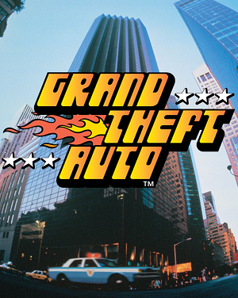
|
Nockstar North, DMA Design, Rockstar Lincoln, Visual Sciences |
Rockstar Games, Take-Two Interactive, ASC Games |
8 листопада 1997 р. |
Microsoft Windows, PlayStation, Game Boy |
Дія гри розгортається в трьох різних вигаданих містах — Ліберті-Сіті, Вайс-Сіті, Сан Андреас. Ці назви міст залишаться і у наступних частинах гри, але всі три міста в одній грі більше не зустрічаються. Вони страждають від розгулу злочинності і корупції, постійною ворожнечею між місцевими злочинними синдикатами, актами насильства з боку вуличних банд, організованих крадіжок, вбивств і корумпованих міських чиновників та поліцейських. |
|
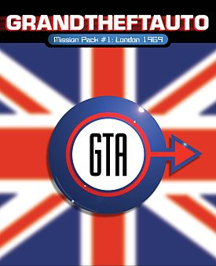
|
Rockstar North, Rockstar Lincoln, Rockstar Toronto, Runecraft |
Rockstar Games |
31 березня 1999 р. |
Microsoft Windows, PlayStation |
Як зрозуміло з назви, дія гри відбувається в Лондоні 1969 року. Гравцеві знову належить виконувати різні місії в ролі злочинця, піднімаючись кар'єрними сходами організованої злочинності. Тимчасовий сетинг дозволив розробникам додати в гру безліч відсилань до культури 60-х років, включаючи зовнішність персонажа, що нагадує Джеймса Бонда і використання характерного жаргону. |
|
|
Rockstar Toronto |
Rockstar Games |
1 червня 1999 р. |
Microsoft Windows |
Дія гри відбувається в Лондоні, Великобританія в 1961 році, за вісім років до початку подій Grand Theft Auto: London 1969 і є приквелом до неї. Хронологічно, час дії є найбільш раннім в порівнянні з іншими іграми серії Grand Theft Auto. Аддони GTA: London є єдиними іграми серії, дії яких відбуваються в реально існуючих містах, мають спільних головних героїв і з місцем дії за межами США. Доповнення включає в себе нові місії, 22 транспортних засобів, діалоги, кат-сцену і розширює мультиплеерную складову оригінальної гри і першого аддона, додаючи нові гонки, випробування і карту для режиму Deathmatch, засновану на Манчестері. |
|
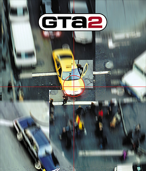
|
Rockstar North, Rockstar Lincoln, DMA Design |
Rockstar Games, ak tronic Software and Services GmbH, Бука |
30 вересня 1999 р. |
Microsoft Windows, PlayStation, Sega Dreamcast, Game Boy |
Події гри, за словами офіційного сайту, відбуваються в 2013 році. Через це гра стала єдиною в серії, де сюжет відбувається в майбутньому. Графічний рушій був поліпшений — гра тепер використовувала DirectX і підтримувала графічні прискорювачі Direct3D. У зв'язку з цим був трохи покращений геймплей. Проте, в основному, гра майже не відрізнялася від попередніх версій. Залишилася 2D графіка і вигляд з висоти пташиного польоту. Але додано й кілька важливих покращень: нарешті була створена довгоочікувана можливість збереження гри з можливістю продовження при наступних її запусках. |
|
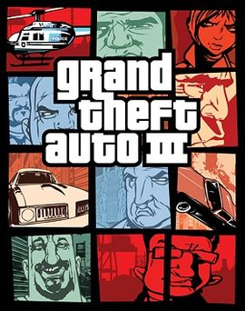
|
Rockstar North, War Drum Studios, DMA Design, Rockstar Vienna |
Rockstar Games, Capcom, ak tronic Software and Services GmbH, Бука |
22 жовтня 2001 р. |
PlayStation 2, PlayStation 3, Microsoft Windows, Android, iOS, MacOS x, Fire OS, Xbox
| Події Grand Theft Auto III відбуваються у вигаданому американському місті Ліберті-Сіті. Протагоністом гри виступає безіменний злочинець, який став жертвою злочинної змови своєї подруги Каталіни і Мігеля, члена колумбійського наркокартелю. В жовтні 2001 року трійця партнерів спільно грабує банк в Ліберті-Сіті. Проте під час втечі головного героя зраджує його подружка Каталіна, підстреливши його, залишає помирати. Проте безіменний злочинець виживає, його заарештовують і засуджують до 10 років в'язниці. Однак при транспортуванні ув'язнених через міст, серед яких був головний герой, на поліцейський кортеж був скоєний напад, який дозволив герою здійснити втечу. Відсидівшись в сховищі разом з сусідом по камері Ейт-Боллом, він примикає до італійської мафіозної сім'ї Леоне. Спочатку виконуючи завдання посильного, головний герой швидко просувається і стає значущою фігурою в сім'ї. Під час виконання одного із завдань він знайомиться з дружиною хрещеного батька сім'ї, Марією. Вона закохується в нього і під час однієї зі сварок з чоловіком каже, що переспала з Клодом. Хрещений батько, Сальваторе Леоне, вирішує усунути головного героя, але той завдяки Марії тікає під заступництво якудзи — японською мафії. Після цього головний герой починає працювати на якудзу. Спершу він виконує доручення Асуку, подруги Марії, а опісля допомагає іншим кримінальним авторитетам. Але в момент його сутичок з колумбійським картелем він зустрічає Каталіну, яка пізніше вбиває Асуку і викрадає Марію, вимагаючи викуп. Головному героєві вдається врятувати Марію і збити вертоліт, на якому намагалася втекти Каталіна. |
|
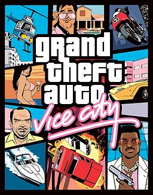
|
Rockstar North, War Drum Studios, Rockstar Vienna |
Rockstar Games |
27 жовтня 2002 р. |
PlayStation 2, PlayStation 3, PlayStation 4, Microsoft Windows, Android, iOS, OS X, Fire OS, Xbox |
Головним героєм гри є Томмі Версетті, що вийшов після 15 років ув'язнення з в'язниці в Ліберті-Сіті. Щоб повернути довіру сім'ї, Томмі за вказівкою місцевого боса Сонні Фореллі відправляється у Вайс-Сіті для укладання важливої угоди з наркодилерами, проте насправді для надання Фореллі можливості «підім'яти» під себе місто. В аеропорту Томмі зустрічає Кена Розенберга, і вони разом з двома помічниками відправляються в доки, де повинна проходити угода. Несподівано плани зриваються: під час операції озброєні люди в масках, найняті Діазом, вбивають помічників і Віктора Венса, Томмі ухиляється від куль і встрибує в автомобіль Кена; брат Віктора, Ленс, який не виходив з вертольота, відлітає неушкодженим. Бандити ховаються, забравши з собою наркотики і гроші, за які відповідав Томмі. Версетті дивом вдається вижити, і він розповідає про все Сонні. Сонні вимагає, щоб Томмі повернув «товар» і гроші. Насправді наркотики і гроші опинилися у Сонні — гравець це може побачити в ролику, де Томмі з готелю дзвонить Сонні. Подальші події гри описують становлення злочинної імперії Версетті: торгівля наркотиками, замовні вбивства, фальшивомонетництво, рекет і так далі. Гравець просувається за сюжетом, виконуючи різні завдання, більшість з яких включає вчинення протизаконних дій. Поступово Версетті перетворюється з пішака, що опинився в незнайомому місті, в головну злочинну фігуру Вайс-Сіті; але терпіння Сонні не безкінечне — зрештою, він особисто приїжджає за тим, що йому належить. В останньому завданні гри необхідно відстояти маєток головного героя, на яке нападає Сонні зі своєю бандою. У разі успіху Томмі Версетті стає найвпливовішим мафіозним босом Вайс-Сіті і залишається в місті моря і сонця. |
|
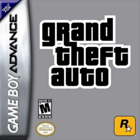
|
Backbone Entertainment |
Rockstar Games |
26 жовтня 2004 р. |
Game Boy Advance |
Дія гри відбувається в Ліберті-Сіті — вигаданому мегаполісі, який також є місцем дії в багатьох інших іграх серії. Майк — дрібний злочинець, який працює з напарником Вінні. Разом вони хочуть виїхати з Ліберті-Сіті і повернутися до звичайного життя, покинувши кримінальний світ, але раптово перед від'їздом Вінні пропонує виконати завдання мафії Леоне. Під час однієї з місій Вінні гине. Майк, для якого Вінні був другим батьком, ставить перед собою завдання помсти. Його відплата веде до його переходу в інші організації такі, як Ярді, Колумбійці і Якудза. Кожна банда має свої угруповання, представників, ворогів і союзників таких, як 8-Ball і друг Вінні — Стів, який даватиме Майку завдання, які допомагають дізнатися правду про смерть Вінні. В останній сцені гри Майк дізнається, що Вінні підстроїв свою смерть, і Майк випадково вбиває Вінні в пориві люті, коли дізнається про те, що Вінні ще живий і підставив його. Після вбивства Вінні Майк збігає з Ліберті-Сіті на літаку Чіско. |
|
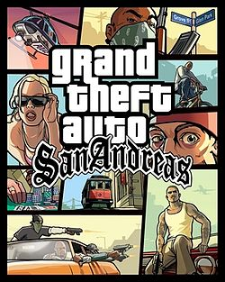
|
Rockstar North, War Drum Studios |
Rockstar Games, Capcom, 1С, ak tronic Software and Services GmbH |
26 жовтня 2004 р. |
PlayStation 2, PlayStation 3, Microsoft Windows, Android, iOS, Xbox, Xbox 360, Windows Phone, MacOS x, OS X, Fire OS |
Події гри відбуваються в 1992 році, за часів розквіту злочинності в мегаполісах Каліфорнії. Гравець керує головним героєм на ім'я Карл «CJ» Джонсон, афроамериканцем віком близько 25 років. CJ повернувся в Лос-Сантос (англ. Los Santos) після п'яти років життя в Ліберті-Сіті. Карл виїхав з Лос-Сантоса через смерть молодшого брата Брайана, в якій його звинувачував старший брат Шон (на прізвисько «Sweet» або «Світ»). У місто він приїхав на похорони убитої матері. Удома CJ зрозумів, що і в сім'ї, і в його старій банді, «Grove Street Families» (названою так по відвічній території, вулиці Гроув) панує повний розлад, і був вимушений залишитися. Далі він переживає падіння і воскресіння банди, буквально власними руками витягуючи її з занепаду, якого вона зазнала. На шляху додому Сі-Джея затримує офіцер поліції Лос-Сантоса Френк Тенпенні, глава організації CRASH (Департамент по боротьбі з організованою злочинністю). Тенпенні звинувачує Сі-Джея у вбивстві іншого члена CRASH, офіцера Ральфа Пенделбері, якого сам же і усунув після того, як Пенделбері почав розслідувати незаконну діяльність Тенпенні. Згодом продажні поліцейські Тенпенні і Пуласкі, шантажуючи Карла сфабрикованими проти нього обвинуваченнями, примушують його працювати на них, вбиваючи людей, що становлять загрозу для злочинної діяльності Тенпенні. Після розмови в поліцейській машині Сі-Джея викидають в самому центрі кримінального району, що знаходиться під контролем афроамериканської вуличної банди Ballas. Оскільки Карл представляє банду свого рідного району Гентон, «Orange Grove Street», що є частиною злочинного альянсу «Grove Street Families», гангстери Ballas є його ворогами. На кладовищі Карл зустрічається зі своїм старшим братом Світом, сестрою Кендл і старим другом Ленсом Вілсоном (прізвисько Райдер). Світ з самого початку агресивно поводиться по відношенню до Сі-Джея, Кендл ж налаштована доброзичливо. Відразу після появи Карла між ним і Світом відбувається сварка, і Кендл йде, заявивши, що вирушає побачитися з Цезарем, своїм хлопцем. Як з'ясовується, Цезар — ватажок ворожої Grove Street мексиканської банди Varrios Los Aztecas і Світ категорично проти його відносин з Кендл. На зворотному шляху Світа, Біг Смоука, Райдера і Сі-Джея атакують гангстери Ballas на автомобілі, і їм доводиться спішно повертатися в рідний квартал на велосипедах. На прохання Світа Карл відправляється на змагання лоурайдерів, в яких бере участь мексиканський бойфренд Кендл. Після того, як Сі-Джей перемагає в змаганні, він зустрічається з Цезарем Віалпандо, який пропонує йому свою дружбу. Саме Цезар згодом відкриває Карлу очі на зраду його старих друзів Біг Смоука та Райдера, що зв'язалися з корумпованим CRASH і бандою своїх заклятих ворогів Ballas. Того дня, коли Карл дізнається про зраду, банда Orange Grove Street на чолі зі Світом здійснює черговий напад на Ballas. Щоб попередити брата, Сі-Джей мчить через усе місто на місце перестрілки і виявляє Світа пораненим. Карл вступає у нерівний бій з численною бандою гангстерів Ballas, знаючи, що з хвилини на хвилину до місце сутички повинна прибути поліція. У той момент, коли бандитів оточують поліцейські, члени банд тікають, а Карл залишається з пораненим братом. Їх заарештовують. Після свого повернення в Лос-Сантос Сі-Джею нарешті вдається домогтися від Торіно звільнення свого брата. Разом з братом вони їдуть додому, на Гроув Стріт, і виявляють рідний квартал в повному занепаді. Згодом головному героєві доводиться заново захоплювати всі ворожі райони. У фінальній частині сюжету Сі-Джей поступово позбувається своїх ворогів, спочатку вбивши Пуласкі, потім Біг Смоука, і нарешті, головного антагоніста гри — офіцера Тенпенні. Цезар Віалпандо, за сприяння Карла повернувший споконвічні території своєї банди, робить пропозицію Кендл. Сі-Джей продовжує захоплювати території, щоб банди Ballas і Los Santos Vagos повністю зникли. |
|
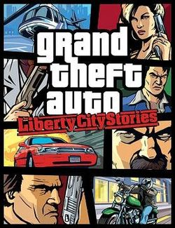
|
Rockstar North, Rockstar Leeds, Lucid Games |
Rockstar Games, Capcom |
24 жовтня 2005 р. |
PlayStation Portable, PlayStation 2, PlayStation 3, Android, iOS, Fire OS |
Дія гри відбувається в вигаданому місті Ліберті-Сіті . Події гри розгортаються в 1998 році, за три роки до історії Grand Theft Auto III. Тоні Сіпріані повертається в місто після кількох років «тихого» життя, пов'язаних з убивством члена ворожої банди в послугу Дону Сальваторе Леоне. На знак подяки Сальваторе дає йому роботу. Сипріані працює з Джейді О'Тулом, членом ворожої Сім'ї Сіндакко, які працюють на Леоне під прикриттям. В ході його завдань Тоні завдає великого удару по родині Сіндакко, знищивши їх казино. Також Сипріані виконує завдання для своєї матері, знайомої по GTA III. Мати Тоні вважає його негідним і постійно призводить йому в порівняння покійного батька. В ході місій Тоні вбиває коханця матері, сицилійського кухаря Джованні Касу. Врешті-решт вона зовсім сходить з котушок і відправляє за «недбайливим синком» кілерів, з якими він розправляється. Нарешті, роботу Тоні пропонує сам Сальваторе, який намагається заробити на страйках проти тунелю і моста в доках і таємно сплавляти і приймати наркотики. За сприяння Тоні Сальваторе приваблює на свою сторону верхівку профспілки на чолі з незговірливою і зарозумілою Джейн Хоппер. Також Тоні проводить операцію з Колумбійським Картелем. ФБР все-таки добирається до Сальваторе, і він просить допомоги у Тоні. Сипріані відвойовує район Сади Вічіта у Сім'ї Фореллі, а також вбиває дона Поул Сіндакко, стерши Сім'ю Сіндакко з кримінальною сцени Ліберті-Сіті. Сальваторе побоюється зростання впливу в місті японської Якудзи і Тоні знищує отриманий японцями військовий танк. Це привертає до Тоні увагу Тосіко Касен, дружини боса Якудзи Кадзукі Касена, якого вона бажає вбити. Тоні зриває кілька операцій Кадзукі і вбиває його самого. Тосіко ж закінчує життя самогубством. Тоні дзвонить зубожілий Дональд Лав і пропонує вбити техаського магната Ейвері Керрінгтона, який співпрацював з будівельною компанією Panlantic. Сальваторе відправляють на судове засідання для призначення застави за звільнення. Але під час перевезення дона на конвой нападають гангстери Сицилійської мафії. Тоні рятує Сальваторе і згодом його відпускають. Сицилійці викрадають мера Майлза О'Донован, необхідного дону для зняття звинувачення. Сальваторе і Тоні переслідують човен сицилійців, відбиваючись від ворожих катерів мафії. Переслідування закінчується у Портландського маяка. Викрадачем виявляється Массімо Торіно. Саме він стояв за всіма проблемами і війнами банд. Він хотів стравити всі мафіозні Сім'ї і вуличні угруповання між собою і, позбувшись від них, стати господарем міста. У фінальній сцені Торіно намагається знищити Тоні, Сальваторе і О'Донован з гелікоптера, але Сипріані вдається збити його. |
|
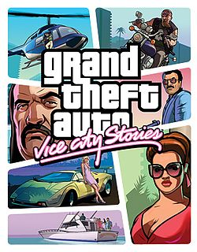
|
Rockstar North, Rockstar Leeds |
Rockstar Games, Capcom, Sony Computer Entertainment, ak tronic Software and Services GmbH |
31 жовтня 2006 р. |
PlayStation Portable, PlayStation 2, PlayStation 3 |
Події гри відбуваються в 1984 році. Капрала Віктора Венса переводять служити на військову базу міста. Віктор потрапляє під командування сержанта Джеррі Мартінеса, тісно пов'язаного з криміналом. Сержант спочатку просить Віктора зробити йому пару послуг через які його звільняють зі збройних сил. Вик відправився до єдиного на той момент знайомому в місті — Філу Кессіді. Філ знайомить Віка зі своїм бізнесом і зі своїми ворогами (мексиканське угруповання Чолло). Під час виконання одного із завдань Філ і Віктор потрапляють в засідку, організовану людьми Мартінеса, з якої насилу вибираються . Філ, довіряючи Віктору, знайомить його зі своєю сестрою Луїзою і з її чоловіком Марті Джей Вільямсом, який може запропонувати Віку роботу. Віктор спочатку допомагає Марті, який займається кришуванням, конфіскацією майна і змістом борделів, в його справах. Луїза, пригноблена приниженнями та образами чоловіка, переїжджає жити до сестри Мері Джо. Однак незабаром Марті викрадає дружину, намагаючись влаштувати її в свій же бордель. Але Вик втручається в драму, рятуючи Луїзу й убивши Марті. Після його смерті всі крапки Марті переходять під управління Віка. Віктор налагоджує бізнес у місті. Проте незабаром в Вайс Сіті приїжджає його брат, Ленс, який стає правою рукою Віка в управлінні кримінальної імперією. За час співпраці Віктора з кубинцями Ленс познайомився з Брайаном Форбсом. Вік з Ленсом допомагають Форбсу однак, незабаром Ленс з'ясовує, що Форбс — поліцейський під прикриттям. Обидва брата викрадають Форбса і ховають в надійному місці, але вбивають його при спробі втечі. Вік починає працювати на Умберто Робіну і знищує завод Чолло. Венс випадково дізнаються про угоду з Джеррі Мартінесем. Віктор і Ленс зривають угоду, викравши дві вантажівки з наркотиками і ховаючи їх у новопридбаному маєтку Ленса на Vice Beach. У розмові з Мартінесом, який вимагав свій товар назад, Вик дізнається те, що кокаїн належить братам Мендес і у них з'явилося бажання розібратися з Венс. Після зриву угоди Мартінес вступив в програму захисту свідків. Ленс, знайшовши покупця, разом з Віком направляється на зустріч. Під час відсутності братів, їх мати вкрала у них весь кокаїн і поїхала в невідомому напрямку. Брати Мендес посилають людей для захоплення точок Венс. Але Венс за допомогою Філа, Умберто і найманців відбивають напад, і Мендес пропонують Венс співпрацювати. Мендес вимагають знайти винних у зриві угоди. Віктор виконує доручення Мендесів і знаходить докази тому, що угода була зірвана Мартінесом. Незабаром Віктор повертає наркотики Мендесів. Незабаром в Вайс-Сіті приїжджає Гонсалес, підручний полковника Хуана Гарсії Кортеса. Гонсалес продає наркотики в обмін на зброю. Віктор спочатку допомагає йому транспортувати товар по морю. Потім Віктор намагається продати невелику партію наркотиків. Гонсалес хотів таким чином привласнити собі трохи наркотиків потайки від полковника. Але на Віктора нападають і відбирають наркотики. Віктор відібрав товар у викрадачів. Але це було останнє завдання Гонсалеса, який заявив, що його дружбі з Віком прийшов кінець. Після зриву відносин з Гонсалесом Віктор знайомиться з колумбійським наркобароном Рікардо Діасом, який ворогує з Гонсалесом. Після розрахунку з Мендес, ті ставлять умову Віктору за яким брати Венс належні виїхати з міста, залишивши всі свої точки Мендес. Після відмови Віктора та Ленса, Мендес починають відкриту ворожнечу з братами. Незабаром, з наміром покінчити з Мендес, Віктор вбиває Армандо Мендеса, який встигає вбити викрадену Луїзу. Незабаром у Діаса з'явився план, як знищити Дієго Мендеса. Віктор за допомогою Філа Кесседі краде військовий вертоліт з військової бази. Вік на вертольоті обстрілює хмарочос де переховувався Дієго Мендес. Вертоліт збивають, але Віктор встигає приземлитися на дах. Він проникає в будівлю, вбиваючи всіх представників клану Мендесів. В цей же час на дах приземлився Джеррі Мартінес. Віктор вбиває і його, і Дієго Мендеса. Незабаром на дах прилітає Ленс і каже, що добув велику партію наркотиків. Віктор просить його залягти на дно і утриматися від великих угод найближчим часом. |
|
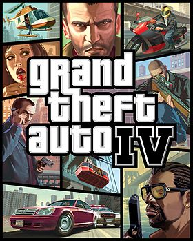
|
Rockstar North, Rockstar Toronto, Rockstar New England |
Rockstar Games |
29 квітня 2008 р. |
Microsoft Windows, PlayStation 3, Xbox 360 |
Дія гри розгортається в 2008 році. Під час початкових титрів в пошуках нового життя в Ліберті-Сіті прибуває на кораблі іммігрант Ніко Беллік. Ніко відбувається з невідомої східноєвропейської країни, імовірно Сербії, назва якої за весь час дії так жодного разу і не називається. Сам Ніко Беллік розмовляє по-англійськи із сильним східноєвропейським акцентом, його кілька разів приймають за російського, однак він прямо говорить, що він не росіянин, і в Росії жодного разу в житті не був. Відомо, що відносно недавно батьківщина Ніко була ареною жорстокої війни, так що, швидше за все, мова йде про Югославії. З великою ймовірністю він є сербом. В молодості Ніко довелося воювати. Війна навчила його, з одного боку, правилам ефективного використання вбивства і, з іншого, зробила пропалені циніком, якого цікавлять в першу чергу гроші. У своєму минулому Ніко приховує похмуру таємницю, яка розкриється з часом. В Ліберті-Сіті новоспечений іммігрант прибуває на запрошення свого кузена, Романа Белліка. У своїх листах Роман яскраво змальовував виконання всіх своїх бажань в «Вільному Місті» в «країні можливостей»: шикарні апартаменти, повний гараж спорт-карів, і цілий гарем топ-моделей. В реальності ж він живе в брудній гадючників в «російською» районі Хоув-Біч (аналог Брайтон-Біч у реальному світі), володіє невеликою службою таксі, і доглядає за місцевою дівчиною Меллорі. іко працює на братів Патрика, Джеррі і Дерріка. Разом з Макрері Ніко грабує банк. Але потім Френсіс дзвонить Ніко і просить вбити власного брата - Дерріка. Він нібито останню перешкоду на шляху Френсіса до посту комісара поліції. Тим часом телефонує Деррік і просить вбити Френсіса. Хто з двох братів залишиться жити - залежить від вибору гравця. Тим часом знову нагадує про себе Дмитро Раскалов. Він викрадає Романа, і тримає його на покинутому складі. Розлючений Ніко поодинці вривається на склад і звільняє свого кузена. Потім Ніко бере участь в глобальній афері з діамантами, одночасно і з різних сторін проходить як в GTA IV, так і в двох доповненнях, Ballad of Gay Tony та Lost and Damned. За наказом італійського мафіозі Рея бочину Ніко разом з бригадою «сміттярів» перевозить діаманти в сміттєвозі. Однак ця бригада вирішує сама викрасти «лід», і втекти в Лас-Вентурас. За наказом Рея Ніко вбиває їх, доставивши діаманти Рею. Глава «сміттярів» Лука намагається сховатися в туалеті, проте Ніко знаходить його і там. Разом з байкером Джонні Клебітц Ніко намагається продати діаманти єврейської мафії, проте партнери опиняються в засідці. В кінцевому підсумку угода зривається, діаманти забирає Луїс Лопес, підопічний Тоні Прінса, гроші - байкер Джонні, а Ніко залишається без грошей і без діамантів. Розлючений Рей наказує Ніко убити спочатку Джонні, але його на місці герой не виявляє і вбиває двох інших байкерів (одним з яких виявляється Джим Фіцджеральд - один Джонні), а потім і торговця мафії Ісаака. Рей повідомляє Ніко, що він знайшов його товариша по службі-зрадника з Балкан: Флоріан Кравіч - один із знайомих Ніко з його минулого. Ніко разом з Романом знаходить Флоріана, але з'ясовується, що Ніко на війні підставив не він. Крім того, Кравіча тепер звуть Берні Крейн, він гомосексуал. Ніко допомагає Берні і захищає його від Дмитра: він починає шантажувати друзів Ніко, але Ніко дає відсіч. Через Рея герой працює на Філа Белла і на дона Джеймса Пегоріно. Після того, як Ніко кілька разів врятував обом життя, перед ним стоїть важкий вибір. Пегоріно і Філл Белл хочуть піти на угоду з Раскалова. Але тільки почувши прізвище «Раскалов», Ніко відмовляється, проте обіцяє подумати. За допомогою уряду і дона Гравеллі Ніко знаходить Дарко Бревіча, який підставив його на війні, він може залишити йому життя, а може вбити. Також Джиммі, зрозумівши, що оточив себе «щурами», просить Ніко прибрати свого охоронця Ентоні, а також Рея Боччіно. Сюжет в грі вперше в серії пропонує дві різні кінцівки, які залежать від останнього вибору Ніко. Герой повинен вирішити, чи варто йому помститися Дмитру Раскалова, в чому Ніко підтримує Кейт Макрірі, або слід укласти з Раскалова угоду, на що його вмовляє Роман. |
|
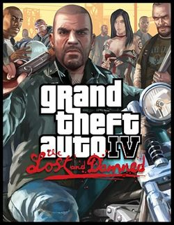
| Rockstar North, Rockstar Toronto |
Rockstar Games |
17 лютого 2009 р. |
Microsoft Windows, PlayStation 3, Xbox 360 |
У The Lost and Damned був доданий цілий ряд нових можливостей, міні-ігор, другорядних місій. Тепер для того, щоб зустрітися з усіма друзями відразу, треба тільки зателефонувати один раз і протагоніст відправиться на зустріч зі своїми двома доступними друзями. Були додані нові міні-ігри: аерохокей; армреслінг, карткова гра «більше-менше», гонки на мотоциклах. Перший епізод для оригінальної Grand Theft Auto IV називається «The Lost and Damned». Головним героєм є байкер Джонні Клебітз — віце-президент банди The Lost. Історія починається з того, що Біллі — президент клубу і глава банди повертається з примусовою реабілітації за рішенням суду в спеціальній клініці. У відсутність Біллі, Джонні уклав перемир'я з угрупованням «The Angels of Death» («Ангели Смерті»). Біллі повертається і йому це зовсім не до душі. Біллі зриває всю велику роботу, яку Джонні робить для банди, це веде до невдоволення Джоні і між ними часто виникають конфлікти. Нарешті після чергової перестрілки з «дохляк» (так члени банди Біллі називають членів банди «Ангелів смерті») Білл повідомляє сумну новину: їх молодшого брата Джейсона хтось убив в Хоув-Біч (убив його Ніко Белік). Його вбив або серб або російська. За допомогою «інформаторів» Біллі і вся команда Lost разгромляют клуб Ангелів, вважаючи що вбили Джейсона вони. У клубі вони знаходять близько 20 кг героїну. За допомогою Елізабет Торрес Джонні знаходить покупця і під прикриттям Ніко і Плейбоя Х відправляється на операцію. Джонні виходить живим, але тільки без частини героїну і грошей. Нарешті Біллі вирішує прийняти розумне рішення: продати героїн тріади і припинити перестрілки. Джонні, Біллі, Джим і Брайан відправляються в Чайнатаун. Там Джим і Джон потрапляють в засідку і, остаточно втративши весь героїн, йдуть. Білла заарештовує поліція, а решта троє повертаються в клуб. Вирішивши, що Джонні зрадив Біллі, Брайан зраджує банду і разом з іншими зрадниками намагається вбити Джона. Джим знайомить героя з Малком - членом групи байкерів, що вважають за краще спортбайки. За допомогою Рея Боччіно герой дізнається, де зрадник. Коли герой застає його зненацька у гравця є вибір: убити або відпустити. Якщо відпустить, то пізніше Брайан з'явиться в якості випадкового персонажа і буде остаточно убитий. Російські бандити погрожують убити Ешлі - наркоманку-байкершу і подругу Джонні. Але дипломатичний варіант змушує Джона викрасти Романа Белліка на прохання Дмитра Раскалова. Також Джон працює на Томаса Стаббса - продажного політика. Нарешті герой виконує пару-трійку доручень для Лізи і Рей пропонує взяти участь в афері з діамантами. Джонні краде діаманти під час операції Тоні Прінса і Луїса Лопеза. Саме він засовує їх у сміттєві баки, звідки дістає їх Ніко. Ніко і Джон проводять операцію з єврейською мафією, але через Луїса угода зривається. Джонні краде гроші і віддає їх Джиму. У повідомленні Джим просить Джонні приїхати до Рею. За допомогою тортур Рей хоче дізнатися у Джима де гроші. Але байкери ховаються. Найманці Рея намагаються вбити Джонні, але той вбиває їх. За лаштунками оригіналу Рей просить Ніко вбити Джима і той, за сюжетом, вбиває. Стаббс повідомляє Джону погану новину: Біллі потрапив під захист свідків і погодився здати банду. Разом з рештою байкерами Джонні вривається в Олдернійскую в'язницю і вбиває Біллі. По поверненню в клуб залишилися байкери, знаходять його розгромлених невідомими особами, а потім підпалюють. |
|
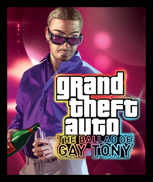
|
Rockstar North |
Rockstar Games |
17 лютого 2009 р. |
Microsoft Windows, PlayStation 3, Xbox 360 |
Головним героєм є Луїс Лопез — особистий охоронець і компаньйон імпресаріо нічних клубів Ліберті-Сіті — Тоні Принца. Тоні здійснює декілька помилок, і його підсаджує на гачок Російська Мафія, яка бажає прибрати до рук його клуби. Залишається сподіватися тільки на Луїса Лопеза, який допомагає йому, так як Тоні дав Луїсу роботу, «вивів у люди», і в цілому влаштував його нове життя. Є правою рукою і за сумісництвом особистим охоронцем Ентоні «Гея» Прінса, який володіє двома нічними клубами в Ліберті-Сіті. Батько Луїса служив у повітряно-десантних військах і, судячи з коротким листів брата і сестри і ще більш коротким реплікам матері, кинув їх дуже давно. Його фотокартка висить у Луїса будинку. У Луїса є мати, Адріана Лопез, брат Ернесто і сестра Літа. З листів рідних, до речі, видно, що вони живуть як рядові обивателі і незмінно докоряють брата його безпутною-злочинної життям. Крім того, сестра Луїса Літа замужем за «білим» американцем, а не латиносів. Луїс рано кинув школу, працював наркодилером в Нортвуді. Після того як Тоні заборгував грошей Морі Кіббуц, Рокко та сім'ю Анчелотті, Луїс виконує для них деякі доручення. Після він знайомиться з Юсуфом Аміром і допомагає йому вкрасти військовий вертоліт, бронетранспортер і вагон поїзда метро. Потім він разом з Тоні і Еваном їде на операцію з купівлі діамантів, але вона зривається через напад Джонні Клебітца. Луїс веде Тоні, в той час як Еван відвозить діаманти. Пізніше стає відомо, що Джонні убив Евана і забрав діаманти. Луїс зриває угоду з продажу вкрадених діамантів єврейської мафії, в якій беруть участь Джонні Клебітц та Ніко Беллік, і забирає діаманти. Через кілька днів Тоні повідомляє про те, що викрадена Грейсі Анчелотті, дочка глави сім'ї Анчелотті. Луїс і Тоні вистежують одного з викрадачів — Патріка Макрірі. Викрадачі вимагають в обмін на Грейсі діаманти, і Анчелотті змушує Тоні і Луїса віддати їх. Грейсі повертається до батька. Під час відвідування клубу Луїс знайомиться з російською мафіозі Реєм Булгаріним. Після виконання кількох його доручень Луїс дізнається, що діаманти, куплені Тоні, належали йому, і Булгарин намагається вбити його. Після Луїс зустрічається з Рокко, який говорить, що із ситуації є лише два виходи — вбити Тоні або померти самому. Луїс повертається в клуб Тоні, де його вже чекають Рокко і Вінс, але Луїс вбиває Вінса, після чого на клуб нападає банда росіян, але Тоні і Луїсу вдається піти. Луїс вирішує вбити Булгарина. Він відправляється на місце поставки героїну і знищує його помічника Тимура, а потім відправляється в аеропорт і встигає застрибнути в літак Булгарина. Убивши його, Луїс вистрибує з літака на парашуті. Повернувшись до Тоні і зустрівшись з Юсуфом, вони вирішують повернутися в бізнес. |
|
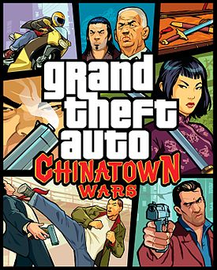
|
Rockstar North, Rockstar Leeds, War Drum Studios |
Rockstar Games, Take-Two Interactive |
17 березня 2009 р. |
PlayStation Portable, Android, Nintendo DS, iOS, Fire OS |
Після смерті батька Хуану потрібно виконати нескладне завдання: необхідно відвезти дядькові Кенні в Ліберті-Сіті старовинний меч, який належав покійному, щоб зміцнити становище їхньої родини на чолі тріад. Хуан Лі — розпещений багатий татковий синок, який очікував від цієї поїздки тільки розваг. Але з самого початку все пішло не так гладко, як йому хотілося б. Втративши реліквію та побувавши на волосок від смерті, Хуан Лі повинен буде пройти довгий шлях у пошуках честі, багатства і помсти, в найнебезпечнішому місті світу. Спочатку він виконує завдання свого дядька Ву Лі повернувши йому його честь серед Тріад. Пізніше він знайомиться з Чаном, сином головного боса тріад і працює на нього. Крім Чана Хуан знайомиться з Мелані Мілард — подружкою Чана, поліцейським Вейд Хестоном, Джоу Мінгом і з самим Хсін Джаомінгом. Виконуючи різні завдання він дізнається що вбивці його батька — Чан і Джоу. Хуан вбиває їх виконуючи обов'язок Тріад. Через деяких час йому приходить лист від Вейда. Там написано, що поліцейських підкупив якийсь щур і що Чан, і Джоу невинні. Вейд дізнається що скоро буде зустріч пацюка з ФБР і негайно їде туди з Хуаном. Доїхавши, він дізнається, що щур — це Ву Кенні Лі. Хуан, наче божевільний ганяється за ним. Кенні доїжджає до готелю Хсін. Туди приходить Хуан, потім він в люті вбиває зрадника і стає головним босом Тріад в Ліберті Сіті. |
|
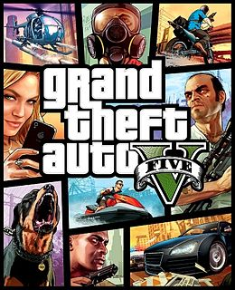
|
Rockstar Games, Rockstar North |
Rockstar Games |
17 вересня 2013 р. |
PlayStation 3, PlayStation 4, Xbox One, Xbox 360, Microsoft Windows |
Сюжет закручений навколо бажання людей отримувати більше грошей у вигаданій версії Південної Каліфорнії. 2004 рік, Людендорф, Північний Янктон. Професійні грабіжники і кращі друзі - Майкл Таунлі, Тревор Філіпс і Бред Снайдер здійснюють наліт на місцевий банк. Пограбування вдається, але при відході машина потрапляє в аварію, і героям доводиться втікати пішки. Але Бреда і Майкла підстрілює агент ФРБ (ігрова пародія на ФБР) - Дейв Нортон. Тревору вдається втекти. Але, як з'ясовується пізніше, смерть Майкла була інсценована, він до пограбування вступив в програму захисту свідків, почав співпрацю з ФРБ і, заради порятунку себе і своєї сім'ї, завів друзів в засідку. Він отримує від ФРБ дорогий особняк, гроші і, щоб вижив Тревор його не знайшов, Майкл змінює своє прізвище «Таунлі» на «де Санта». Дія гри переноситься в 2013 рік, в Лос-Сантос, штат Сан-Андреас. Майкл має напружені відносини з сім'єю: його дружина Аманда постійно витрачає його гроші і зраджує йому, син Джиммі схиблений на відеоіграх і наркотики, а дочка Трейсі намагається потрапити в телебачення, зокрема в порно-індустрію. Майкл ходить на сеанси до психотерапевта Ісаї Фрідлендер, який, на його думку, йому зовсім не допомагає. На вулиці до Майклу звертаються двоє афроамериканців - Франклін Клінтон і його друг Ламар Девіс - і питають адресу одного будинку. Вони викрадають у власника цього будинку два спорткара для роботодавця Франкліна Симона Етаряна - господаря автосалону. У салоні Симон продає в кредит позашляховик синові Майкла Джиммі. Але незабаром Симон доручає Франкліну викрасти машину з дому Майкла «за прострочення». Франклін пробирається в будинок і викрадає машину. Але на задньому сидінні виявляється Майкл, який приставляє пістолет до голови Франкліна і змушує в'їхати в вікно автосалону Етаряна. Майкл б'є Симона за шахрайство, Франклін втрачає роботу. Франклін пропонує свої послуги Майклу. Сина Майкла, Джиммі, викрадають якісь бандити разом з яхтою Майкла, яку Джиммі намагався їм продати. Майкл з Франкліном рятують Джиммі, але яхту упускають. Майкл, застукавши Аманду в ліжку з її тренером з тенісу, женеться за ним разом з Франкліном до його будинку і, прив'язавши опори будинку до свого пікапу, обрушує його на землю. Але з'ясовується, що це був будинок подруги ватажка мексиканського мафії в Лос-Сантосі, Мартіна Мадрасо. Майкл повинен за ремонт два з половиною мільйона, і йому доводиться повернутися до пограбувань. Він знаходить свого старого друга, Лестера Хреста. Франклін також допомагає своєму другові Ламар, який пов'язаний з угрупованням Chamberlain Gangster Families, якій протистоїть банда Ballas. З в'язниці повертається один з почесних членів Families, Гарольд «Стретч» Джозеф, з яким Франклін має напружені відносини. Також Ламар віддає Франкліну під опікою свого пса Чопа. Майкл і Лестер готують пограбування ювелірного магазину «Vangelico». Разом з Франкліном і іншими членами банди Майкл здійснює наліт на магазин і виносить близько п'яти мільйонів доларів. Він розплачується з Мартіном, і разом з Франкліном вирішує залягти на дно. Але під час пограбування Майкл видає себе своєю фразою, яку сказав в Людендорфом в 2004-м: «Кожен день ти забуваєш тисячу дрібниць. Нехай це буде одна з них ». І його по цій фразі дізнається Тревор Філіпс, який в цей час, займаючись сексом з наркоманкою-Байкерша Ешлі Батлер, дивився репортаж новин про пограбування. Тревор живе в Сенді-Шорс, невеликому містечку в Окрузі Блейн. Він має власну наркокомпанію «Тревор Філіпс Індастріз». Але на його шляху встають байкери «Пропащі», які, після розвалу клубу в Ліберті-Сіті, перебралися в Округ Блейн. Ситуація досягає свого апогею, коли Тревор в пориві люті вбиває їх президента, Джонні Клебіца, який вирішив розібратися з Тревором через почуттів до Ешлі. Також бізнесу Тревора заважає латиноамериканська угруповання Varrios Los Aztecas, яка нападає на його наркофабрика. Тревор відображає напад і вбиває ватажка банди - Ортегу. З Тревором починає працювати Тао Чен, син Вея Чена, ватажка тріади в Сан-Андреасі. Але його переманюють в свій бізнес конкуренти Тревора, брати О'Ніл. Тревор знищує їх будинок. Що залишилися в живих О'Ніл і Вей Чен жадають помсти. За допомогою свого друга Уейда Тревор знаходить Майкла в Лос-Сантосі. Друзі возз'єднуються, але мають напружені відносини - Тревор вважає Майкла зрадником, інсценували смерть і сховався з грошима. Майкл зустрічається з Дейвом Нортоном і його колегою Стівом Хейнсом і, за їх дорученням, з Тревором і Франкліном рятує потрібного ФРБ людини Фердинанда Керімова з будівлі Цур (ігрова пародія на ЦРУ). Потім, під керівництвом Тревора, герої крадуть секретну зброю у військовій охоронної організації Merryweather, яке, однак, доводиться повернути. Майкл свариться з сім'єю, і Аманда з дітьми їдуть. Майкл, Тревор і Франклін за дорученням ФРБ грабують інкасаторський фургон з грошима, і Майкл знайомиться з Девіна Уестоном, багатим бізнесменом, який доручає героям вкрасти для нього кілька рідкісних машин. |